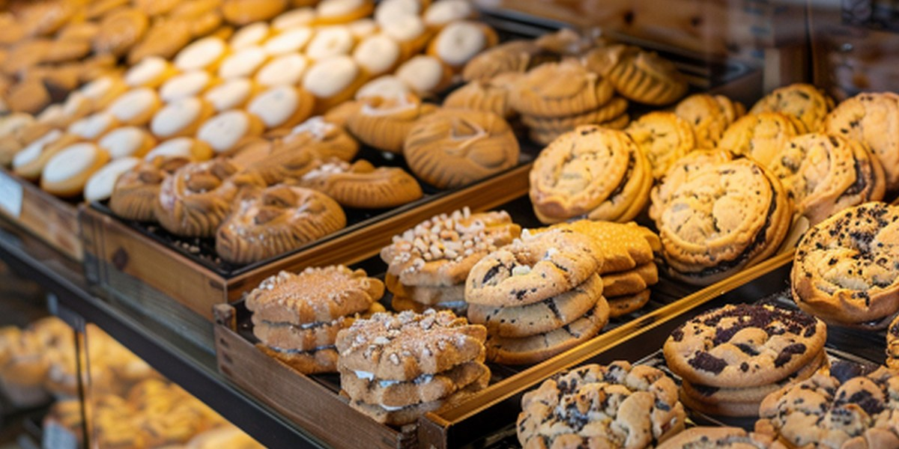

Welcome to North Star Bakery
Good morning, neighbor! We are a small, family-run bakery where every loaf is shaped by hand and every tray comes out of the oven warm. Whether you are grabbing breakfast on your commute, picking up dinner rolls for the family, or planning an event, there is a seat for you at our counter.
A Welcome from Our Bakers
Press play to hear a short welcome message from the North Star team.
What We’re Known For
- Slow-fermented sourdough with a crackling crust and a tender, tangy crumb.
- Flaky morning pastries baked in small batches before sunrise.
- Cookies and sweet treats that kids (and grown-ups) line up for.
- Custom cakes and party orders for birthdays, showers, and community events.
Browse our products to see what is fresh this week.
Featured Item of the Week: Neighborhood Cookie Box

This week we are boxing up a mix of chocolate chunk, sugar-dusted, and iced shortbread cookies. A box of six is perfect for the office, a school event, or a family movie night. Pre-order by Thursday for weekend pickup.
Hours and Location
Address: 214 Maple Street, Springfield, OR 97477
Hours: Tuesday–Friday 6:30 a.m.–5:00 p.m.; Saturday 7:00 a.m.–3:00 p.m.; Sunday 8:00 a.m.–1:00 p.m.; closed Monday.
See the contact page for full details.